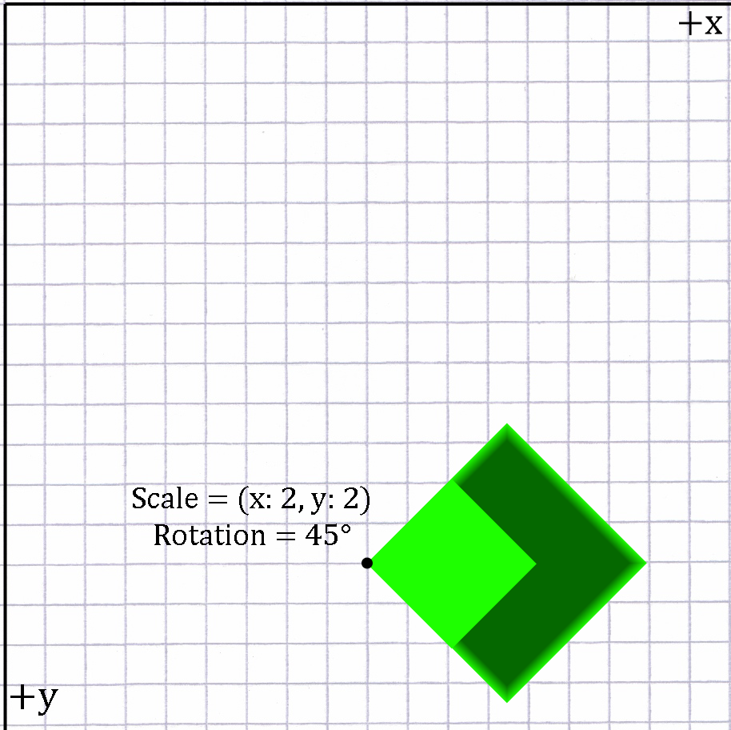
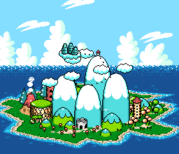
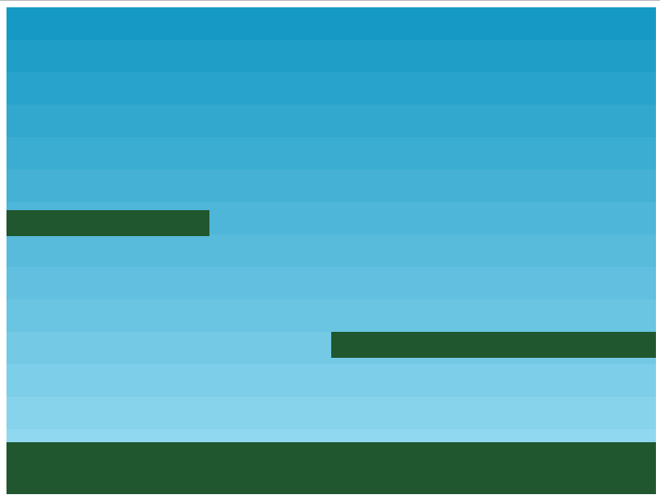
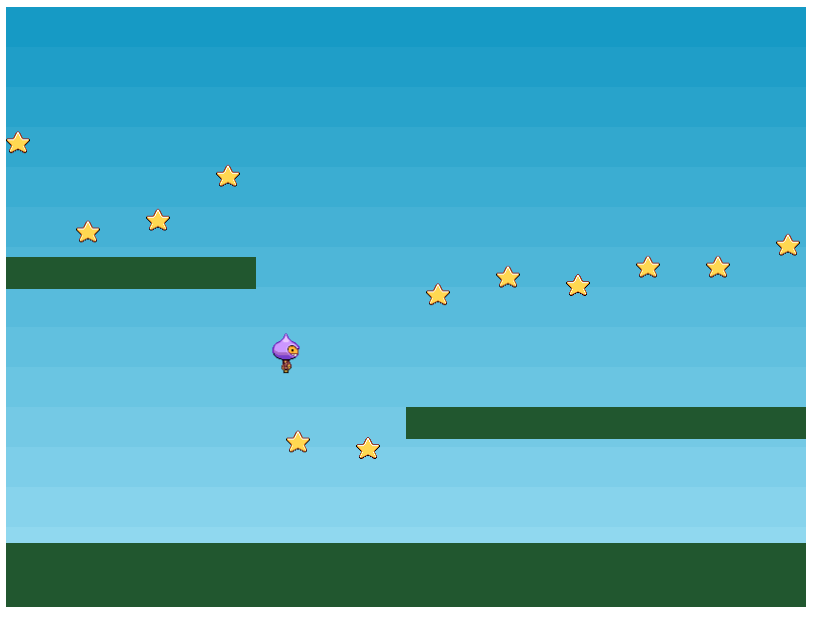
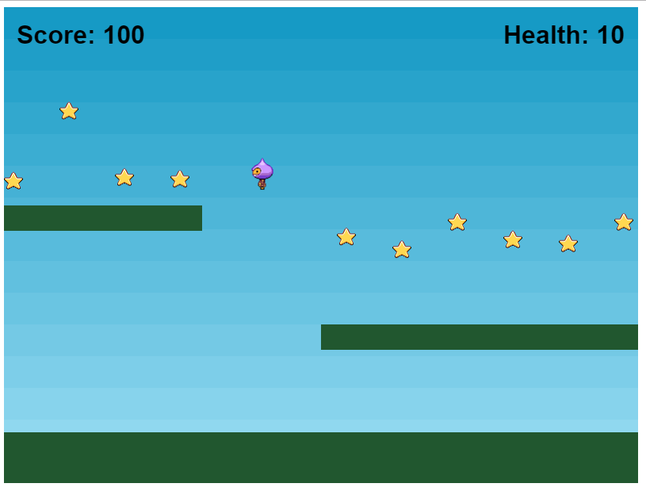

Intro to Game Development
Part 1
Holden Profit
Course Overview
Over the next few weeks, you'll learn the fundamentals of game development.
We'll cover the anatomy of a game, basic physics, and even some artificial intelligence.
At the end of the class you'll be able to build your own 2D game
which will be demonstrated as the class capstone project. Primary
technology used will be Javascript ES6 and Phaser.
So what is a game?
Games are media just like movies and books, but what separates them from these things?
They're interactive media! This makes it a powerful way to tell stories and enjoy
all kinds of experiences!
Modern AAA Games
Amazing Games with tons of developers and huge budgets!
Uncharted 4: A Thief's End - Naughty Dog

Overwatch - Blizzard

Dark Souls 3 - From Software
Those look cool!
When can I make games like those?!
Hold on a second!
We need to understand the basics of a game first! And that's most easily done with simpler (probably 2D) games!

Mario Bros. - Nintendo
Megaman - Capcom

Contra - Konami
Okay, so how do I make that?
I'm glad you asked!
where do we start?
What actually makes a game?
What are the core ideas?
What Does a Game Actually Do?
- Respond to player input
- Render graphics to the screen
- Enforce game rules on entities
Basic Game Lifecycle
let gameIsPlaying = true;
startup();
while (gameIsPlaying) {
processInput();
updateEntities();
render();
}
tearDown();
Start by Rendering
While it's the last step in the game loop process, it's the best starting point because from there you can see your entity updates and responses to input represented visually on the screen.
2-Dimensional Coordinates
My guide to basic vector principals can be found here.
Vectors are a way to represent direction and velocity while Points represent a location in space.
For all intents and purposes, Vectors can almost always be used to represent a Point.
2-Dimensional Coordinates
We use these Vectors to represent where an entity is within the world.
Computer screen y coordinates almost always go in the opposite direction of your
typical graph.

2-Dimensional Coordinates
If I want to render my sprite in the lower-middle of the screen, it'd look something like this:

2-Dimensional Coordinates
In addition to location, sprites will also have a rotatation and scale associated with them.

Z-Index
Despite being a 2D game, entities will also have a z coordinate known as a Z-Index.
The closer the Z-Index to the camera, the less likely it is to be drawn over by another entity.
Z-Index
Z-Index allows us to create some neat effects, including psuedo 3D rendering:

Z-Index
Z-Indexing can be used to easily split a 2D game into layers:
- Background
- Foreground
- Entities
- HUD
These layers can be rearranged or have layers added for visual effects as needed.
Layer - Background
Layer - Foreground
Layer - Entities
Layer - HUD Elements
Processing Input
class Player {
...
handleInput(keys) {
...
}
}
let processInput = function(player) {
// Grab the directional keys and
// pass them to the player
let pressedKeys = keyboard.createCursorKeys();
player.handleInput(pressedKeys);
};
Processing Input
class Player {
...
handleInput(keys) {
if (keys.left.isDown) {
// Move to the left
this.x -= 10;
}
else if (keys.right.isDown) {
// Move to the right
this.x += 10;
}
}
}
Processing Input
The previous approach will move the player, but is at the mercy of the frame rate of the game.
A better method is to use velocity, which is the entity's rate of movement per update
Processing Input
class Player {
...
handleInput(keys) {
// Reset player velocity
this.velocity.x = 0;
if (keys.left.isDown) {
// Move to the left
this.velocity.x = -150;
}
else if (keys.right.isDown) {
// Move to the right
this.velocity.x = 150;
}
}
}
Processing Input
class Player {
...
update(deltaTime) {
// Increment x pos by x velocity multiplied
// by time since last update
this.x += this.velocity.x * deltaTime;
}
}
Processing Input
class Player {
handleInput(keys) {
if (keys.up.isDown && touchingFloor) {
this.velocity.y = -150;
}
}
update(deltaTime) {
// If the current y velocity is less than our gravity,
// slowly move it to y gravity
if (this.velocity.y < this.gravity.y) {
this.velocity.y += this.gravity.y * deltaTime;
}
// Repeat for y what we did for x
this.y += this.velocity.y * deltaTime;
}
}
Questions
Sources